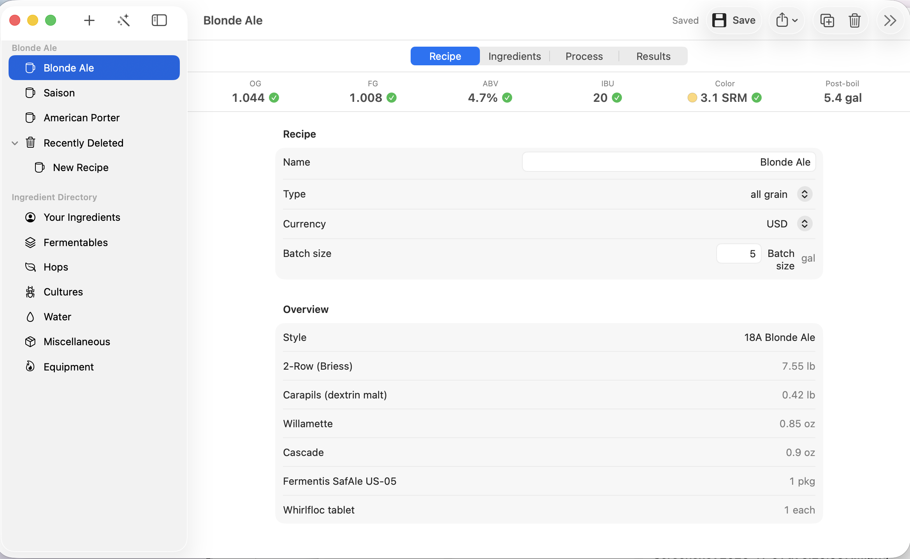
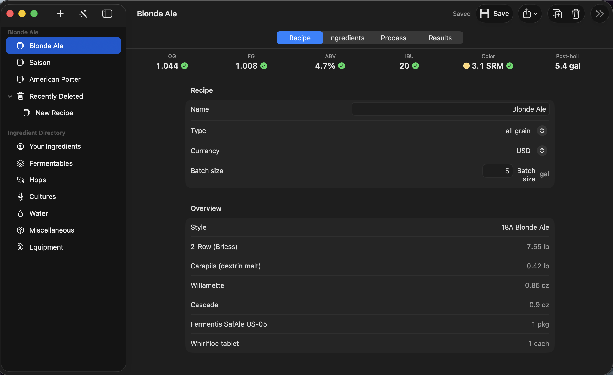
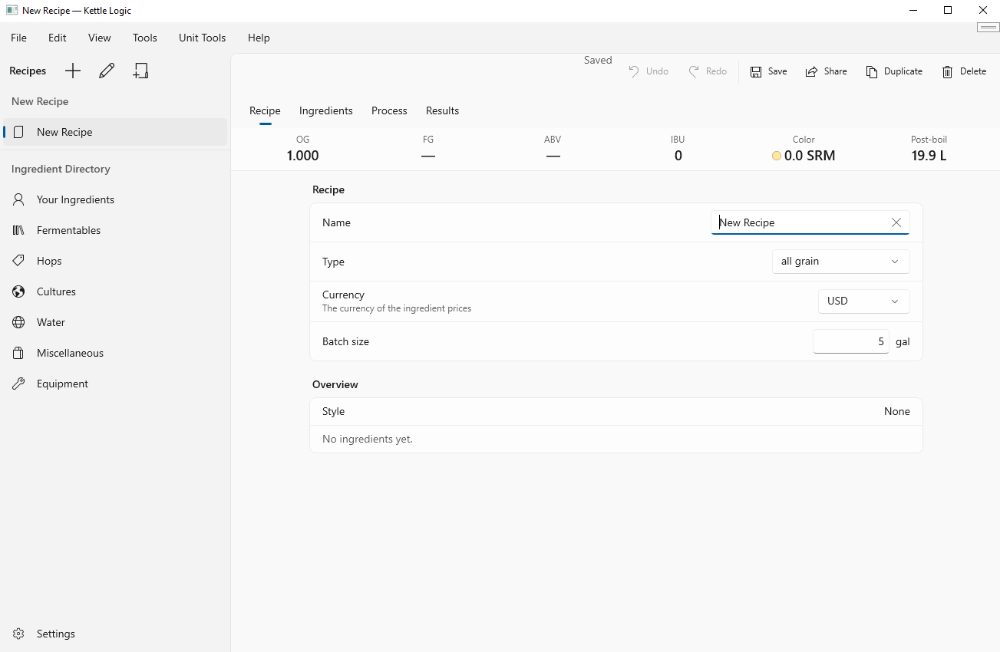
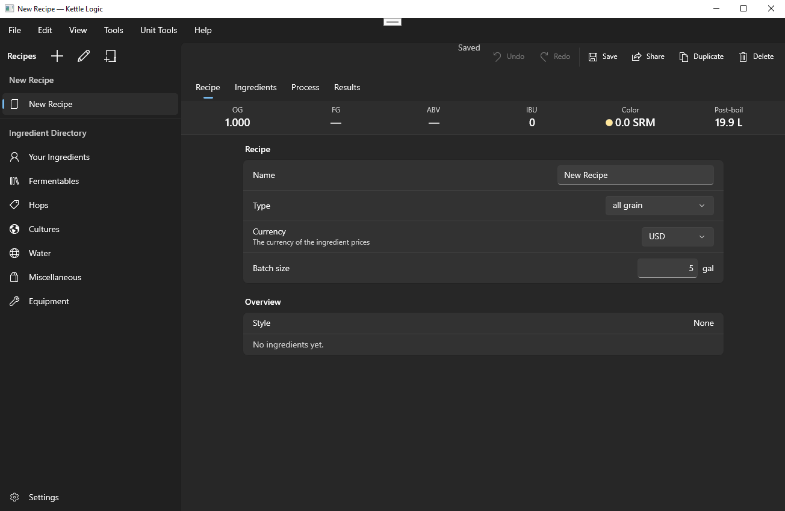

Recipe software for beer, cider, mead, and wine.
Kettle Logic helps you plan what you're making, see how it will turn out, and get through brew day. It's fast, it's easy on the eyes, and it feels right on your computer.
Download Kettle LogicFree to download. Takes about a minute to install.
The Windows app is self-signed, so Windows may show a certificate warning when you install it. See more




Brewing software that finally feels right.
Most recipe software looks and behaves like it was made a long time ago. Kettle Logic is made for the computer you have today.
It feels like your other apps
Built with your computer in mind. Each one looks and works the way you already expect, so there's nothing new to figure out.
It's quick
It opens fast and keeps up with you. Change an ingredient and the numbers update right away, with no waiting and no spinning wheel.
It's nice to look at
Clear text, plenty of space, and a clean layout. You can see everything about your recipe at a glance. There's a dark mode for late brew nights.
How it's different from other brewing software.
We built Kettle Logic for people who love making drinks, not for people who love learning software.
| What you notice | Typical brewing software | Kettle Logic |
|---|---|---|
| How it looks | Crowded screens, tiny text, old-fashioned buttons. | Clean, roomy, and easy to read, with a modern design language. |
| Dark mode | Missing, or just inverted colors that are hard to read. | A proper dark mode, built for late brew nights. |
| How it feels | The same app squeezed onto every kind of computer, so it feels slightly off. | Built as native apps for Mac, Windows, and Linux, so it feels natural on each. |
| Speed | Slow to open, and it can lag with a big recipe collection. | Opens quickly and responds instantly. |
| Getting started | Set aside an evening to read the manual. | Simple to get started. Start a recipe and go, with everything labeled in plain words. |
| What you can make | Often focused on beer only. | Beer, cider, mead, and wine, all in one place. |
| Price and source | Often paid, with closed source code. | Free and open source, so you can use it, read it, and change it. |
| Brew sheets and data | Exporting and importing data is often a chore. | Export brew sheets, with a simple interface for bringing in your data. |
| Compatibility | Recipes often get stuck in one app. | Works with BeerJSON and BeerXML software, so your recipes come with you. |
Everything you need, from first idea to finished bottle.
The essentials, done well and easy to find.
- Beer, cider, mead, and wine
- Whatever you like to make, you'll find ingredients and guidance suited to it. Switch between them whenever you want.
- Recipes that do the math
- Choose your ingredients and see how strong, how sweet or bitter, and what color your drink will be. It updates as you go.
- Any batch size
- Planning a small test batch or a big one? Make a recipe larger or smaller and every ingredient adjusts with it.
- Your equipment, your numbers
- Tell it about your pots and fermenters once. Your recipes then fit your setup, so what you plan is what you get.
- A helper for brew day
- Follow your recipe step by step, with timers for the things that need timing, so nothing gets missed.
- Your recipes stay yours
- Everything is saved on your own computer. No account to create and nothing to sign up for before you start.
Nerd details: architecture and engine
Architecture
- One shared engine. All recipe logic lives in a C++20 core with no UI code, so it builds the same on every platform.
- Native front ends. SwiftUI on macOS, WinUI 3 with C++/WinRT on Windows, and GTK4 with libadwaita on Linux. Each uses its platform's standard controls, and none of them computes recipe numbers.
- Every change is a command. Edits, imports, and scripts all go through one undo and redo stack. An import is a single undo step.
- Stable IDs. Ingredients, mash steps, and batches are referenced by stable IDs, not pointers or list positions, so references survive undo, redo, and file round trips.
- Built-in data in one place. The ingredient catalog, brewing systems, styles, and glossary live in the core, so the three apps can't drift apart.
- Safe saves. Files are written atomically, so a crash in the middle of a save doesn't corrupt a recipe.
- Threading. Each document belongs to one thread at a time. Calculations are pure functions over snapshots, so the interface can run them without stalling.
Engine
- Exact numbers. Quantities are stored as exact rationals in SI units: kilograms, liters, and degrees Celsius. Typed values are parsed from decimal text exactly, never through floating point. Results are converted to display values at the end.
- Gravity, alcohol, and bitterness. Original and final gravity come from the grain bill, ABV from the gravity drop, and bitterness (IBU) from Tinseth's utilization formula.
- Color. SRM from Morey's formula, with EBC and Lovibond conversions.
- Water. Ion blending by volume, residual alkalinity, mash pH, and salt additions sized to a target profile. Acid additions account for pH-dependent protonation.
- Mash and boil. Strike-water temperature, decoction and temperature-step volumes, and boil-off with settings for each recipe.
- Cider, mead, and wine. Sugar and honey planning from gravity, alcohol from stoichiometry, and sulfite dosing from free and molecular SO₂.
- Styles. Vital statistics for 86 BJCP 2021 styles, so a recipe can be checked against its style's ranges.
- Testing. Engine tests check calculations against hand-worked values, validate BeerJSON files against the upstream schema, and cover round trips. Water chemistry results were checked against a reference spreadsheet.
- Known simplifications. Boil-off is linear, hop form isn't corrected, and mixed yeast cultures aren't modeled. Each simplification is documented alongside the formula it affects.
Files and formats
- BeerJSON 1.0 first. Recipes are read and written as BeerJSON, checked against the upstream schema.
- Kettle Logic data in a sidecar. Upstream BeerJSON doesn't allow extra properties, so app-only data is stored in a companion file next to the recipe.
- BeerXML 1.0 and 2.01 import and 2.01 export. Import reads numbers exactly and skips unknown tags with a warning. Import is one undo step. Before export, the app lists anything BeerXML can't hold.
Help make Kettle Logic better.
Kettle Logic is developed in the open. Bug reports, ideas, and code are all welcome.
- Report a bug
- Found something that doesn't work, or a number that looks wrong? Tell us what you did and what you expected on the issues page.
- Suggest a feature
- Missing an ingredient, a brewing system, or a workflow? Share the idea with us on the issues page.
- Check the math
- If you know your numbers, compare Kettle Logic's results with your own brew notes or a reference, and tell us where they differ.
- Write code
- Fix a bug or add something yourself. Fork the repository, make your change, and open a pull request.
Verify your download: file hashes and Windows self-signing
Check the file hash
A SHA-256 hash is a fingerprint of a file. If the fingerprint of your download matches the one published here, it's the same file we released.
| File | SHA-256 |
|---|
Download the file, but don't open it yet. Then run the command for your system in the folder with the file, and compare the result with the hash above. Capitalization doesn't matter, but every character must match.
Windows (PowerShell):
Get-FileHash .\ -Algorithm SHA256macOS (Terminal):
shasum -a 256 Linux (terminal):
sha256sum If the hashes differ, don't open the file. Delete it and download it again, and let us know if it keeps happening.
What Windows self-signing means
Code signing attaches a digital signature to an installer. The signature shows that the file hasn't been changed since it was signed, and it names who signed it. Windows checks this when you open a downloaded file.
Most signed apps use a certificate bought from a company Windows already trusts. Kettle Logic's Windows build is self-signed instead: we made the certificate ourselves. The file is still signed, but Windows has no way to know who we are, so it may show a warning such as "Windows protected your PC" or "Unknown publisher".
If you trust where you got the file, you can choose More info, then Run anyway. If you'd like to check first, use the file hash above.
Your next batch starts here.
Download Kettle Logic and plan your first recipe in a few minutes.
Download Kettle LogicThe Windows app is self-signed, so Windows may show a certificate warning when you install it. See more